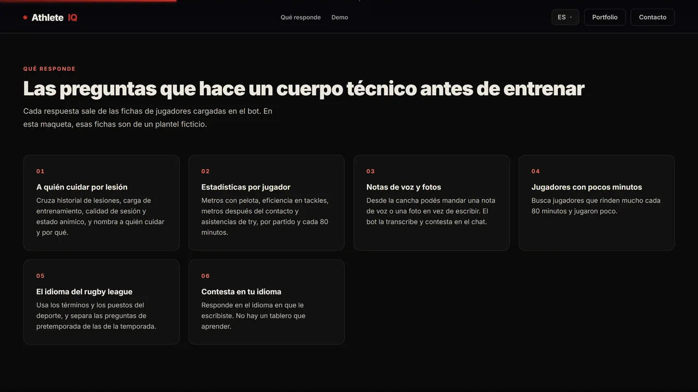
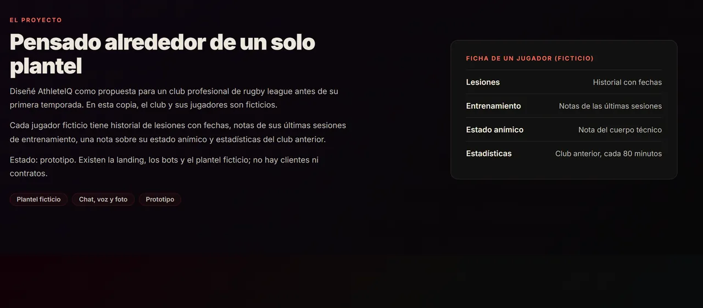
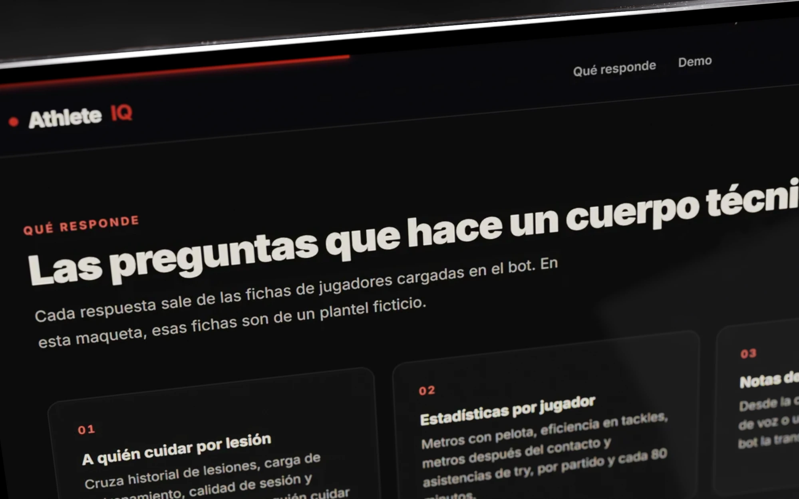
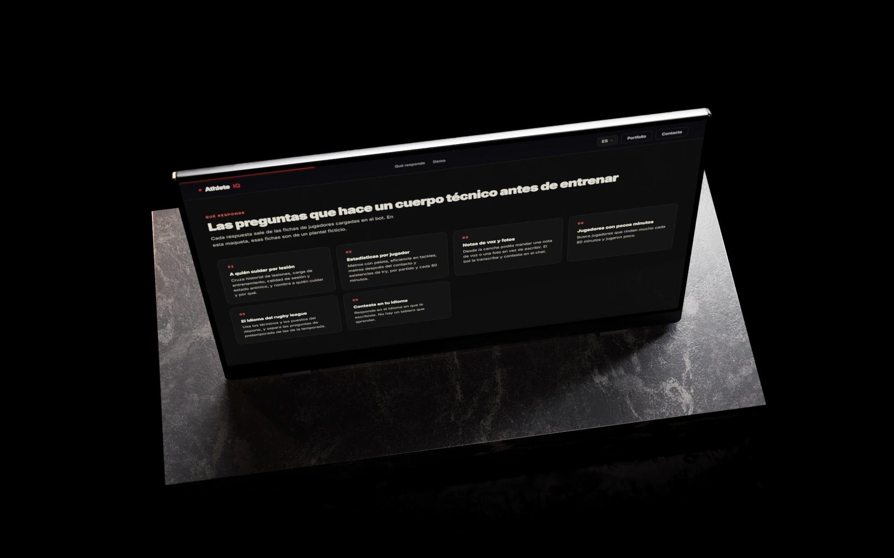
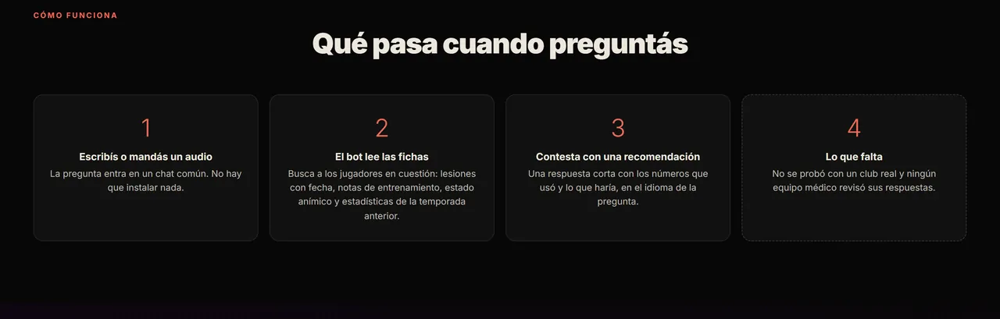

Caso de estudio
Prototipo
AthleteIQ
El cuerpo técnico pregunta por un jugador desde la cancha y el bot contesta con su ficha.
- Qué es
- Un bot de chat que contesta preguntas sobre el plantel con la ficha de cada jugador, por texto, voz o foto.
- Para quién
- Preparadores físicos y cuerpos técnicos de clubes profesionales; la demo está pensada para rugby league.
- Estado
- Prototipo con demo funcional: una landing en cinco idiomas y bots de chat de prueba. Sin clientes ni contratos.
- Mi rol
- Product owner: concepto, copy, dirección del diseño y construcción con IA
- Período
- Mayo de 2026
- Herramientas
- Desarrollo asistido por IA · Three.js · API de Telegram · HTML, CSS y JavaScript
El problema
La pregunta se hace al costado de la cancha y la respuesta está repartida en tres lugares.
El cuerpo técnico tiene los datos de cada jugador: lesiones, carga de entrenamiento, calidad de cada sesión y estado anímico. Están en lugares distintos y no se consultan en segundos con el teléfono en la mano, que es como se decide entre dos ejercicios.
Recorrido
El bot contesta lo que un cuerpo técnico pregunta antes de entrenar, con la ficha de cada jugador y en su idioma.
Capturas de la landing de demostración: club genérico y nombres de jugadores inventados.
-

Responde las preguntas de antes de entrenar
Riesgo de lesión, carga, recuperación, si alguien está listo para la pretemporada, quién es el jugador más subvalorado. El staff escribe como habla y el bot contesta en lenguaje natural, sin un tablero que aprender.
-

Cada respuesta sale de la ficha del jugador
El bot contesta con los datos de cada jugador: historial de lesiones, carga de entrenamiento, calidad de sesión y estado anímico. La demostración publicada usa un club genérico y nombres de jugadores inventados.
También hace
- Contesta en tu idioma Los bots responden en el idioma de quien escribe, y la landing está en cinco: inglés, español, portugués, francés y chino.
- Voz y foto Además de texto, acepta notas de voz y fotos.
- Un bot por equipo Hay un bot de demostración y bots separados para cada equipo.
- Landing con 3D Una pelota de rugby en 3D hecha con Three.js y un chat guionado con cuatro preguntas.

Decisiones
Dónde se pregunta y qué se puede mostrar sin un club real.
-
Decidí
Bots de chat que responden en lenguaje natural.
Lo que viEl staff decide en el campo, con el teléfono en la mano.
DescartéUn tablero web con filtros. Nadie abre un tablero entre dos ejercicios.
-
Decidí
Responder en el idioma de quien pregunta y escribir la landing en cinco (EN, ES, PT, FR, ZH).
Lo que viUn cuerpo técnico internacional no trabaja en un solo idioma.
DescartéSólo inglés. La pregunta tiene que salir como se piensa, sin traducir.
-
Decidí
Mostrar la demo con un club genérico y nombres de jugadores inventados, sin cifras de retorno.
Lo que viSin contrato, un nombre ajeno o una cifra supuesta se leen como promesa.
DescartéPublicar la versión atada a un club real. Lo que no está medido no se muestra como resultado.
Cómo lo construí
Primero el mensaje y las preguntas; después la landing, los bots y la limpieza para poder mostrarla.
-
Propuesta de valor y copy.
Primero el mensaje («The Data Has No Favourites») y las preguntas que el staff haría de verdad; después las pantallas.
- 01 ¿Quién tiene más riesgo de lesión?
- 02 ¿Quién es el jugador más subvalorado?
- 03 ¿Reyes o Lindqvist en la fecha 1?
- 04 ¿Okafor está listo para la pretemporada?
Las cuatro preguntas del chat guionado, como quedaron en la landing, con nombres de jugadores inventados. -
Landing.
Oscura, con la pelota 3D y, alrededor, los campos de la ficha del jugador; cinco idiomas por diccionario.
-
Bots de chat.
Responden por texto, voz y foto, en el idioma del usuario, sobre el plantel.
-
Verificación.
Landing capturada a 1920×1080; bots que reciben texto, nota de voz y foto.
-
Qué saqué antes de publicar.
Para publicarla saqué el club real, los jugadores, los accesos a los bots y las cifras supuestas; la demo de este sitio es esa copia saneada.
- 01 El club, el entrenador y los jugadores reales
- 02 Los accesos a los bots
- 03 El formulario de contacto
- 04 Los enlaces a clubes y medios de la liga
- 05 Las cifras de retorno y de jugadores, que eran supuestos
Lo que saqué de la landing original antes de publicar la copia.
Resultado
Landing y bots funcionando como demo, sin clientes ni contratos.
Prototipo con landing y bots de prueba. No hay clientes ni contratos, y ninguna cifra de retorno ni de jugadores se publica: eran supuestos de la demo.
Qué falta
- Validarla con un club: es lo más importante y todavía no pasó.
- Que un cuerpo médico revise sus respuestas antes de usarlas con jugadores reales.
Qué cambiaría
Armarla genérica desde el principio; atarla a un club real me obligó a sanearla para poder mostrarla.
Galería
La pantalla recostada sobre el mármol, y lo que pasa cuando se pregunta, según la landing.


Contacto
Escribime si tenés un producto para construir o un proceso para automatizar.
Respondo en el día.